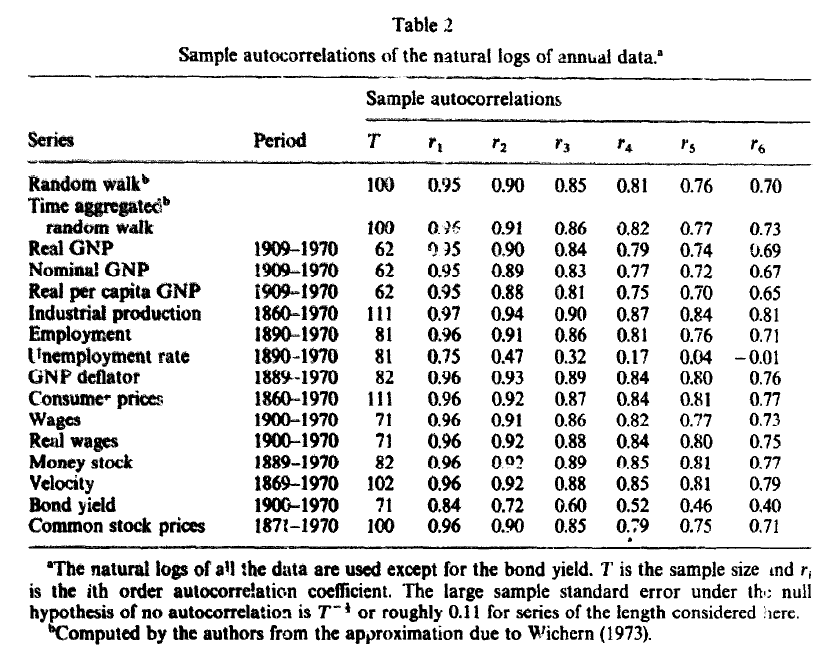
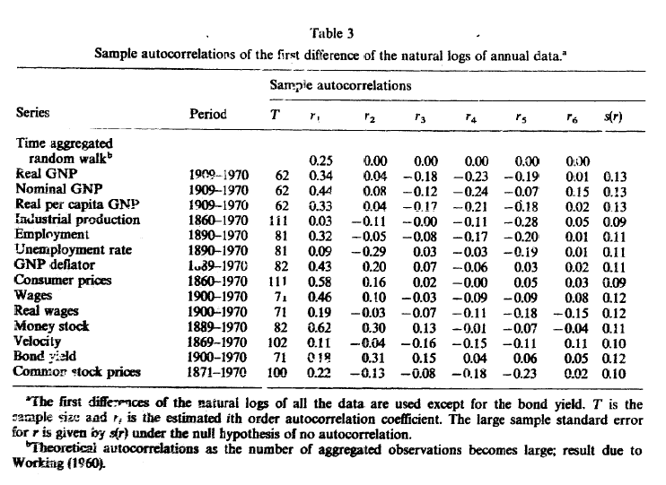
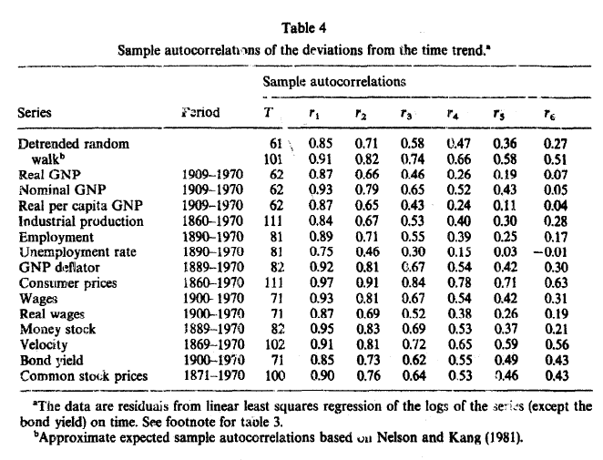
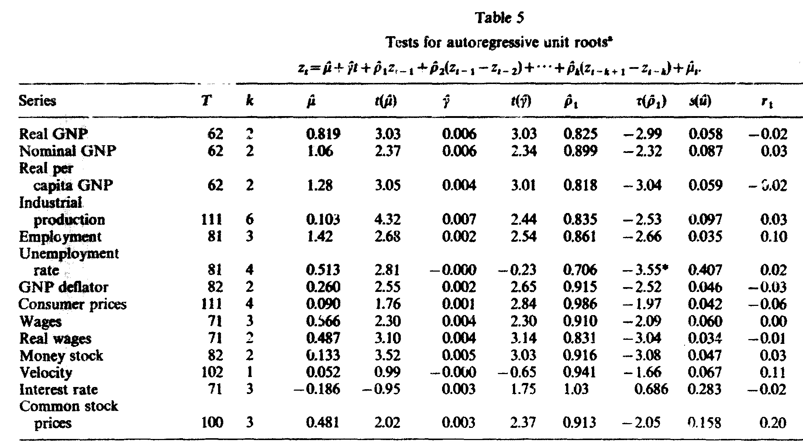
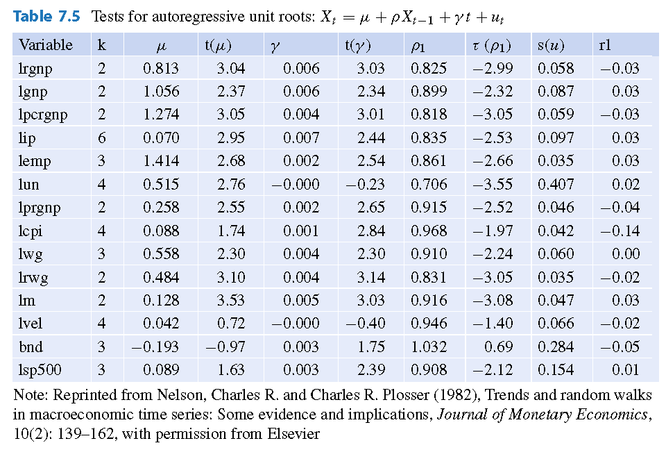

Replicando el trabajo de Nelson y Plosser (1982)
Contents
4.4. Replicando el trabajo de Nelson y Plosser (1982)¶
En un artículo muy citado
Nelson y Plosser 1982 Trends and Random Walks in Macroeconomic Time Series: Some evidence and implications. Journal of Monetary Economics 10, pp.139-162
los autores examinan varias series macroeconómicas de uso común.
Usando pruebas de Dickey-Fuller, encontraron que todas las series macroeconómicas contienen raíces unitarias, o más correctamente, que no podían rechazar la hipótesis nula de un raíz unitaria.
En esta parte del laboratorio replicamos algunos de los resultados de Nelson y Plosser.
Preparación¶
import numpy as np
import pandas as pd
import matplotlib.pyplot as plt
from statsmodels.tsa.stattools import acf, kpss
from statsmodels.formula.api import ols
Leer los datos y visualizarlos¶
GITHUB_REPO = "https://raw.githubusercontent.com/randall-romero/econometria/master/data/"
DATAPATH = GITHUB_REPO if 'google.colab' in str(get_ipython()) else '../data/'
datos = pd.read_stata(DATAPATH + 'NelsonPlosserData.dta')
datos.set_index('year',inplace=True)
datos.index = datos.index.year
titulos = [f'r{i}' for i in range(1,7)] # para rotular unas tablas abajo
variables = {'lrgnp':'Real GNP',
'lgnp':'Nominal GNP',
'lpcrgnp':'Real per capita GNP',
'lip':'Industrial production',
'lemp':'Employment',
'lun':'Unemployment rate',
'lprgnp':'GNP deflator',
'lcpi':'Consumer prices',
'lwg':'Wages',
'lrwg':'Real wages',
'lm':'Money stock',
'lvel':'Velocity',
'bnd':'Bond yield',
'lsp500':'Common stock prices'}
datos = datos[variables.keys()].rename(columns=variables)
datos.plot(subplots=True, figsize=[15,15], layout=[-1,3]);
Calculando autocorrelaciones¶

Fuente: Nelson y Plosser 1982 Trends and Random Walks in Macroeconomic Time Series: Some evidence and implications. Journal of Monetary Economics 10, pp.139-162
def acf6lags(nombre_variable, d):
"""
Calcula los primeros 6 coeficientes de autocorrelación
Args:
nombre_variable: str, el nombre de una columna de la tabla "datos"
d: número de veces que hay que diferenciar la serie (0 o 1 en la práctica)
Returns:
np.array, los 6 coeficientes de autocorrelación, redondeados a dos decimales
"""
serie = datos[nombre_variable].diff(d) if d>0 else datos[nombre_variable]
return acf(serie.dropna(), nlags=6, fft=False)[1:].round(2)
def tabla_acf(d):
"""
Crea una tabla con las primeras 6 autocorrelaciones de todas las series en "datos"
Args:
d: int, número de veces que hay que diferenciar la serie (0 o 1 en la práctica)
Returns:
una tabla de pandas, series en las filas, número de rezagos en las columnas
"""
return pd.DataFrame([acf6lags(serie,d) for serie in datos], index=variables.values(), columns=titulos)
Serie en nivel¶
tabla2 = tabla_acf(0)
tabla2
| r1 | r2 | r3 | r4 | r5 | r6 | |
|---|---|---|---|---|---|---|
| Real GNP | 0.95 | 0.90 | 0.84 | 0.79 | 0.74 | 0.69 |
| Nominal GNP | 0.95 | 0.89 | 0.83 | 0.77 | 0.72 | 0.67 |
| Real per capita GNP | 0.95 | 0.88 | 0.81 | 0.75 | 0.70 | 0.65 |
| Industrial production | 0.97 | 0.94 | 0.90 | 0.87 | 0.84 | 0.81 |
| Employment | 0.96 | 0.91 | 0.86 | 0.81 | 0.76 | 0.71 |
| Unemployment rate | 0.75 | 0.47 | 0.32 | 0.17 | 0.04 | -0.01 |
| GNP deflator | 0.96 | 0.93 | 0.89 | 0.84 | 0.80 | 0.76 |
| Consumer prices | 0.96 | 0.92 | 0.87 | 0.84 | 0.80 | 0.77 |
| Wages | 0.96 | 0.91 | 0.86 | 0.82 | 0.77 | 0.73 |
| Real wages | 0.96 | 0.92 | 0.88 | 0.84 | 0.80 | 0.75 |
| Money stock | 0.96 | 0.92 | 0.89 | 0.85 | 0.81 | 0.77 |
| Velocity | 0.96 | 0.92 | 0.88 | 0.85 | 0.81 | 0.79 |
| Bond yield | 0.84 | 0.72 | 0.60 | 0.52 | 0.46 | 0.40 |
| Common stock prices | 0.96 | 0.90 | 0.85 | 0.79 | 0.75 | 0.71 |
def rango_datos(ser):
"""
Determina el rango de los datos disponibles de una serie
Args:
ser: una serie de pandas
Returns:
str, primera observación -- última observación
"""
return f'{ser.first_valid_index()} -- {ser.last_valid_index()}'
datos.apply(rango_datos)
Real GNP 1909 -- 1970
Nominal GNP 1909 -- 1970
Real per capita GNP 1909 -- 1970
Industrial production 1860 -- 1970
Employment 1890 -- 1970
Unemployment rate 1890 -- 1970
GNP deflator 1889 -- 1970
Consumer prices 1860 -- 1970
Wages 1900 -- 1970
Real wages 1900 -- 1970
Money stock 1889 -- 1970
Velocity 1869 -- 1970
Bond yield 1900 -- 1970
Common stock prices 1871 -- 1970
dtype: object
tabla2.insert(0,'Period', datos.apply(rango_datos))
tabla2.insert(1, 'T', datos.apply(lambda ser: ser.dropna().count()))
tabla2
| Period | T | r1 | r2 | r3 | r4 | r5 | r6 | |
|---|---|---|---|---|---|---|---|---|
| Real GNP | 1909 -- 1970 | 62 | 0.95 | 0.90 | 0.84 | 0.79 | 0.74 | 0.69 |
| Nominal GNP | 1909 -- 1970 | 62 | 0.95 | 0.89 | 0.83 | 0.77 | 0.72 | 0.67 |
| Real per capita GNP | 1909 -- 1970 | 62 | 0.95 | 0.88 | 0.81 | 0.75 | 0.70 | 0.65 |
| Industrial production | 1860 -- 1970 | 111 | 0.97 | 0.94 | 0.90 | 0.87 | 0.84 | 0.81 |
| Employment | 1890 -- 1970 | 81 | 0.96 | 0.91 | 0.86 | 0.81 | 0.76 | 0.71 |
| Unemployment rate | 1890 -- 1970 | 81 | 0.75 | 0.47 | 0.32 | 0.17 | 0.04 | -0.01 |
| GNP deflator | 1889 -- 1970 | 82 | 0.96 | 0.93 | 0.89 | 0.84 | 0.80 | 0.76 |
| Consumer prices | 1860 -- 1970 | 111 | 0.96 | 0.92 | 0.87 | 0.84 | 0.80 | 0.77 |
| Wages | 1900 -- 1970 | 71 | 0.96 | 0.91 | 0.86 | 0.82 | 0.77 | 0.73 |
| Real wages | 1900 -- 1970 | 71 | 0.96 | 0.92 | 0.88 | 0.84 | 0.80 | 0.75 |
| Money stock | 1889 -- 1970 | 82 | 0.96 | 0.92 | 0.89 | 0.85 | 0.81 | 0.77 |
| Velocity | 1869 -- 1970 | 102 | 0.96 | 0.92 | 0.88 | 0.85 | 0.81 | 0.79 |
| Bond yield | 1900 -- 1970 | 71 | 0.84 | 0.72 | 0.60 | 0.52 | 0.46 | 0.40 |
| Common stock prices | 1871 -- 1970 | 100 | 0.96 | 0.90 | 0.85 | 0.79 | 0.75 | 0.71 |
Serie en primera diferencia¶

Fuente: Nelson y Plosser 1982 Trends and Random Walks in Macroeconomic Time Series: Some evidence and implications. Journal of Monetary Economics 10, pp.139-162
tabla3 = tabla_acf(1)
tabla3.insert(0,'Period', datos.apply(rango_datos))
tabla3.insert(1, 'T', datos.apply(lambda ser: ser.dropna().count()))
tabla3
| Period | T | r1 | r2 | r3 | r4 | r5 | r6 | |
|---|---|---|---|---|---|---|---|---|
| Real GNP | 1909 -- 1970 | 62 | 0.34 | 0.04 | -0.18 | -0.23 | -0.19 | 0.01 |
| Nominal GNP | 1909 -- 1970 | 62 | 0.44 | 0.08 | -0.12 | -0.24 | -0.07 | 0.15 |
| Real per capita GNP | 1909 -- 1970 | 62 | 0.33 | 0.04 | -0.17 | -0.21 | -0.18 | 0.02 |
| Industrial production | 1860 -- 1970 | 111 | 0.03 | -0.11 | -0.00 | -0.11 | -0.28 | 0.05 |
| Employment | 1890 -- 1970 | 81 | 0.32 | -0.05 | -0.08 | -0.17 | -0.20 | 0.01 |
| Unemployment rate | 1890 -- 1970 | 81 | 0.09 | -0.29 | 0.03 | -0.03 | -0.19 | 0.01 |
| GNP deflator | 1889 -- 1970 | 82 | 0.43 | 0.20 | 0.07 | -0.06 | 0.03 | 0.02 |
| Consumer prices | 1860 -- 1970 | 111 | 0.58 | 0.16 | 0.02 | -0.00 | 0.05 | 0.03 |
| Wages | 1900 -- 1970 | 71 | 0.46 | 0.10 | -0.03 | -0.09 | -0.09 | 0.08 |
| Real wages | 1900 -- 1970 | 71 | 0.19 | -0.03 | -0.07 | -0.11 | -0.18 | -0.15 |
| Money stock | 1889 -- 1970 | 82 | 0.62 | 0.30 | 0.13 | -0.01 | -0.07 | -0.04 |
| Velocity | 1869 -- 1970 | 102 | 0.11 | -0.04 | -0.16 | -0.15 | -0.11 | 0.11 |
| Bond yield | 1900 -- 1970 | 71 | 0.18 | 0.31 | 0.15 | 0.04 | 0.06 | 0.05 |
| Common stock prices | 1871 -- 1970 | 100 | 0.22 | -0.13 | -0.08 | -0.18 | -0.23 | 0.02 |
Desviaciones respecto a una tendencia lineal¶

Fuente: Nelson y Plosser 1982 Trends and Random Walks in Macroeconomic Time Series: Some evidence and implications. Journal of Monetary Economics 10, pp.139-162
def acf_deviation_from_trend(nombre_variable):
"""
Calcular las primeras 6 autocorrelaciones de la desviación de una serie respecto a
su tendencia lineal.
Se estima por mínimos cuadrados ordinarios una regresión de la forma
y = intercepto + time
y se calcula la autocorrelación de los residuos.
Args:
nombre_variable: str, nombre de una variable de la tabla "datos"
Returns:
np.array, los 6 coeficientes de autocorrelación, redondeados a dos decimales
"""
temp = datos[[nombre_variable]].dropna()
temp.columns = ['y']
temp['t'] = np.arange(temp.shape[0])
resid = ols('y ~ t', temp).fit().resid
return acf(resid, nlags=6, fft=False)[1:].round(2)
tabla4 = pd.DataFrame([acf_deviation_from_trend(ser) for ser in datos], index=variables.values(), columns=titulos)
tabla4.insert(0,'Period', datos.apply(rango_datos))
tabla4.insert(1, 'T', datos.apply(lambda ser: ser.dropna().count()))
tabla4
| Period | T | r1 | r2 | r3 | r4 | r5 | r6 | |
|---|---|---|---|---|---|---|---|---|
| Real GNP | 1909 -- 1970 | 62 | 0.87 | 0.66 | 0.44 | 0.26 | 0.13 | 0.07 |
| Nominal GNP | 1909 -- 1970 | 62 | 0.93 | 0.79 | 0.65 | 0.52 | 0.43 | 0.35 |
| Real per capita GNP | 1909 -- 1970 | 62 | 0.87 | 0.65 | 0.43 | 0.24 | 0.11 | 0.04 |
| Industrial production | 1860 -- 1970 | 111 | 0.84 | 0.67 | 0.53 | 0.40 | 0.29 | 0.28 |
| Employment | 1890 -- 1970 | 81 | 0.89 | 0.71 | 0.55 | 0.39 | 0.25 | 0.17 |
| Unemployment rate | 1890 -- 1970 | 81 | 0.75 | 0.46 | 0.30 | 0.15 | 0.03 | -0.01 |
| GNP deflator | 1889 -- 1970 | 82 | 0.92 | 0.81 | 0.67 | 0.54 | 0.42 | 0.30 |
| Consumer prices | 1860 -- 1970 | 111 | 0.97 | 0.91 | 0.84 | 0.78 | 0.71 | 0.63 |
| Wages | 1900 -- 1970 | 71 | 0.93 | 0.81 | 0.67 | 0.54 | 0.42 | 0.31 |
| Real wages | 1900 -- 1970 | 71 | 0.87 | 0.69 | 0.52 | 0.38 | 0.26 | 0.19 |
| Money stock | 1889 -- 1970 | 82 | 0.95 | 0.83 | 0.69 | 0.53 | 0.37 | 0.21 |
| Velocity | 1869 -- 1970 | 102 | 0.91 | 0.81 | 0.72 | 0.65 | 0.59 | 0.56 |
| Bond yield | 1900 -- 1970 | 71 | 0.85 | 0.73 | 0.62 | 0.55 | 0.49 | 0.43 |
| Common stock prices | 1871 -- 1970 | 100 | 0.90 | 0.76 | 0.64 | 0.53 | 0.46 | 0.43 |
Mostrar las tablas 2 a 4 en una sola¶
pd.concat([tabla2, tabla3, tabla4], axis=1)
| Period | T | r1 | r2 | r3 | r4 | r5 | r6 | Period | T | ... | r5 | r6 | Period | T | r1 | r2 | r3 | r4 | r5 | r6 | |
|---|---|---|---|---|---|---|---|---|---|---|---|---|---|---|---|---|---|---|---|---|---|
| Real GNP | 1909 -- 1970 | 62 | 0.95 | 0.90 | 0.84 | 0.79 | 0.74 | 0.69 | 1909 -- 1970 | 62 | ... | -0.19 | 0.01 | 1909 -- 1970 | 62 | 0.87 | 0.66 | 0.44 | 0.26 | 0.13 | 0.07 |
| Nominal GNP | 1909 -- 1970 | 62 | 0.95 | 0.89 | 0.83 | 0.77 | 0.72 | 0.67 | 1909 -- 1970 | 62 | ... | -0.07 | 0.15 | 1909 -- 1970 | 62 | 0.93 | 0.79 | 0.65 | 0.52 | 0.43 | 0.35 |
| Real per capita GNP | 1909 -- 1970 | 62 | 0.95 | 0.88 | 0.81 | 0.75 | 0.70 | 0.65 | 1909 -- 1970 | 62 | ... | -0.18 | 0.02 | 1909 -- 1970 | 62 | 0.87 | 0.65 | 0.43 | 0.24 | 0.11 | 0.04 |
| Industrial production | 1860 -- 1970 | 111 | 0.97 | 0.94 | 0.90 | 0.87 | 0.84 | 0.81 | 1860 -- 1970 | 111 | ... | -0.28 | 0.05 | 1860 -- 1970 | 111 | 0.84 | 0.67 | 0.53 | 0.40 | 0.29 | 0.28 |
| Employment | 1890 -- 1970 | 81 | 0.96 | 0.91 | 0.86 | 0.81 | 0.76 | 0.71 | 1890 -- 1970 | 81 | ... | -0.20 | 0.01 | 1890 -- 1970 | 81 | 0.89 | 0.71 | 0.55 | 0.39 | 0.25 | 0.17 |
| Unemployment rate | 1890 -- 1970 | 81 | 0.75 | 0.47 | 0.32 | 0.17 | 0.04 | -0.01 | 1890 -- 1970 | 81 | ... | -0.19 | 0.01 | 1890 -- 1970 | 81 | 0.75 | 0.46 | 0.30 | 0.15 | 0.03 | -0.01 |
| GNP deflator | 1889 -- 1970 | 82 | 0.96 | 0.93 | 0.89 | 0.84 | 0.80 | 0.76 | 1889 -- 1970 | 82 | ... | 0.03 | 0.02 | 1889 -- 1970 | 82 | 0.92 | 0.81 | 0.67 | 0.54 | 0.42 | 0.30 |
| Consumer prices | 1860 -- 1970 | 111 | 0.96 | 0.92 | 0.87 | 0.84 | 0.80 | 0.77 | 1860 -- 1970 | 111 | ... | 0.05 | 0.03 | 1860 -- 1970 | 111 | 0.97 | 0.91 | 0.84 | 0.78 | 0.71 | 0.63 |
| Wages | 1900 -- 1970 | 71 | 0.96 | 0.91 | 0.86 | 0.82 | 0.77 | 0.73 | 1900 -- 1970 | 71 | ... | -0.09 | 0.08 | 1900 -- 1970 | 71 | 0.93 | 0.81 | 0.67 | 0.54 | 0.42 | 0.31 |
| Real wages | 1900 -- 1970 | 71 | 0.96 | 0.92 | 0.88 | 0.84 | 0.80 | 0.75 | 1900 -- 1970 | 71 | ... | -0.18 | -0.15 | 1900 -- 1970 | 71 | 0.87 | 0.69 | 0.52 | 0.38 | 0.26 | 0.19 |
| Money stock | 1889 -- 1970 | 82 | 0.96 | 0.92 | 0.89 | 0.85 | 0.81 | 0.77 | 1889 -- 1970 | 82 | ... | -0.07 | -0.04 | 1889 -- 1970 | 82 | 0.95 | 0.83 | 0.69 | 0.53 | 0.37 | 0.21 |
| Velocity | 1869 -- 1970 | 102 | 0.96 | 0.92 | 0.88 | 0.85 | 0.81 | 0.79 | 1869 -- 1970 | 102 | ... | -0.11 | 0.11 | 1869 -- 1970 | 102 | 0.91 | 0.81 | 0.72 | 0.65 | 0.59 | 0.56 |
| Bond yield | 1900 -- 1970 | 71 | 0.84 | 0.72 | 0.60 | 0.52 | 0.46 | 0.40 | 1900 -- 1970 | 71 | ... | 0.06 | 0.05 | 1900 -- 1970 | 71 | 0.85 | 0.73 | 0.62 | 0.55 | 0.49 | 0.43 |
| Common stock prices | 1871 -- 1970 | 100 | 0.96 | 0.90 | 0.85 | 0.79 | 0.75 | 0.71 | 1871 -- 1970 | 100 | ... | -0.23 | 0.02 | 1871 -- 1970 | 100 | 0.90 | 0.76 | 0.64 | 0.53 | 0.46 | 0.43 |
14 rows × 24 columns
pd.concat([tabla2, tabla3.iloc[:,-6:], tabla4.iloc[:,-6:]], axis=1, keys=['Niveles','Diferencias','Desviación de tendencia'])
| Niveles | Diferencias | Desviación de tendencia | ||||||||||||||||||
|---|---|---|---|---|---|---|---|---|---|---|---|---|---|---|---|---|---|---|---|---|
| Period | T | r1 | r2 | r3 | r4 | r5 | r6 | r1 | r2 | r3 | r4 | r5 | r6 | r1 | r2 | r3 | r4 | r5 | r6 | |
| Real GNP | 1909 -- 1970 | 62 | 0.95 | 0.90 | 0.84 | 0.79 | 0.74 | 0.69 | 0.34 | 0.04 | -0.18 | -0.23 | -0.19 | 0.01 | 0.87 | 0.66 | 0.44 | 0.26 | 0.13 | 0.07 |
| Nominal GNP | 1909 -- 1970 | 62 | 0.95 | 0.89 | 0.83 | 0.77 | 0.72 | 0.67 | 0.44 | 0.08 | -0.12 | -0.24 | -0.07 | 0.15 | 0.93 | 0.79 | 0.65 | 0.52 | 0.43 | 0.35 |
| Real per capita GNP | 1909 -- 1970 | 62 | 0.95 | 0.88 | 0.81 | 0.75 | 0.70 | 0.65 | 0.33 | 0.04 | -0.17 | -0.21 | -0.18 | 0.02 | 0.87 | 0.65 | 0.43 | 0.24 | 0.11 | 0.04 |
| Industrial production | 1860 -- 1970 | 111 | 0.97 | 0.94 | 0.90 | 0.87 | 0.84 | 0.81 | 0.03 | -0.11 | -0.00 | -0.11 | -0.28 | 0.05 | 0.84 | 0.67 | 0.53 | 0.40 | 0.29 | 0.28 |
| Employment | 1890 -- 1970 | 81 | 0.96 | 0.91 | 0.86 | 0.81 | 0.76 | 0.71 | 0.32 | -0.05 | -0.08 | -0.17 | -0.20 | 0.01 | 0.89 | 0.71 | 0.55 | 0.39 | 0.25 | 0.17 |
| Unemployment rate | 1890 -- 1970 | 81 | 0.75 | 0.47 | 0.32 | 0.17 | 0.04 | -0.01 | 0.09 | -0.29 | 0.03 | -0.03 | -0.19 | 0.01 | 0.75 | 0.46 | 0.30 | 0.15 | 0.03 | -0.01 |
| GNP deflator | 1889 -- 1970 | 82 | 0.96 | 0.93 | 0.89 | 0.84 | 0.80 | 0.76 | 0.43 | 0.20 | 0.07 | -0.06 | 0.03 | 0.02 | 0.92 | 0.81 | 0.67 | 0.54 | 0.42 | 0.30 |
| Consumer prices | 1860 -- 1970 | 111 | 0.96 | 0.92 | 0.87 | 0.84 | 0.80 | 0.77 | 0.58 | 0.16 | 0.02 | -0.00 | 0.05 | 0.03 | 0.97 | 0.91 | 0.84 | 0.78 | 0.71 | 0.63 |
| Wages | 1900 -- 1970 | 71 | 0.96 | 0.91 | 0.86 | 0.82 | 0.77 | 0.73 | 0.46 | 0.10 | -0.03 | -0.09 | -0.09 | 0.08 | 0.93 | 0.81 | 0.67 | 0.54 | 0.42 | 0.31 |
| Real wages | 1900 -- 1970 | 71 | 0.96 | 0.92 | 0.88 | 0.84 | 0.80 | 0.75 | 0.19 | -0.03 | -0.07 | -0.11 | -0.18 | -0.15 | 0.87 | 0.69 | 0.52 | 0.38 | 0.26 | 0.19 |
| Money stock | 1889 -- 1970 | 82 | 0.96 | 0.92 | 0.89 | 0.85 | 0.81 | 0.77 | 0.62 | 0.30 | 0.13 | -0.01 | -0.07 | -0.04 | 0.95 | 0.83 | 0.69 | 0.53 | 0.37 | 0.21 |
| Velocity | 1869 -- 1970 | 102 | 0.96 | 0.92 | 0.88 | 0.85 | 0.81 | 0.79 | 0.11 | -0.04 | -0.16 | -0.15 | -0.11 | 0.11 | 0.91 | 0.81 | 0.72 | 0.65 | 0.59 | 0.56 |
| Bond yield | 1900 -- 1970 | 71 | 0.84 | 0.72 | 0.60 | 0.52 | 0.46 | 0.40 | 0.18 | 0.31 | 0.15 | 0.04 | 0.06 | 0.05 | 0.85 | 0.73 | 0.62 | 0.55 | 0.49 | 0.43 |
| Common stock prices | 1871 -- 1970 | 100 | 0.96 | 0.90 | 0.85 | 0.79 | 0.75 | 0.71 | 0.22 | -0.13 | -0.08 | -0.18 | -0.23 | 0.02 | 0.90 | 0.76 | 0.64 | 0.53 | 0.46 | 0.43 |
Estimar la regresión Dickey-Fuller, “a pie”¶

Fuente: Nelson y Plosser 1982 Trends and Random Walks in Macroeconomic Time Series: Some evidence and implications. Journal of Monetary Economics 10, pp.139-162

Fuente: Levendis 2018 Time Series Econometrics: Learning Through Replication. Springer
def ADFregression(nombre_variable, k):
"""
Estima la regresión necesaria para la prueba aumentada de Dickey-Fuller
Args:
nombre_variable: str, nombre de una variable de la tabla "datos"
k: Número de rezagos del proceso AR subyacente (1 + rezagos en regresión)
Returns:
Un objeto de resultados estimados de statsmodels
"""
temp = datos[[nombre_variable]].dropna()
temp.columns=['Y']
temp['DY'] = temp['Y'].diff()
temp['LY'] = temp['Y'].shift()
temp['t'] = np.arange(temp.shape[0])
for j in range(1, k):
temp[f'D{j}Y'] = temp['DY'].shift(j)
regresores = ' + '.join(temp.columns[2:])
print(regresores)
frml = 'DY ~ ' + regresores
return ols(frml, temp).fit()
ADFregression('Real GNP', 4).summary()
LY + t + D1Y + D2Y + D3Y
| Dep. Variable: | DY | R-squared: | 0.265 |
|---|---|---|---|
| Model: | OLS | Adj. R-squared: | 0.194 |
| Method: | Least Squares | F-statistic: | 3.753 |
| Date: | Sun, 24 Apr 2022 | Prob (F-statistic): | 0.00563 |
| Time: | 16:21:14 | Log-Likelihood: | 84.601 |
| No. Observations: | 58 | AIC: | -157.2 |
| Df Residuals: | 52 | BIC: | -144.8 |
| Df Model: | 5 | ||
| Covariance Type: | nonrobust |
| coef | std err | t | P>|t| | [0.025 | 0.975] | |
|---|---|---|---|---|---|---|
| Intercept | 0.8645 | 0.317 | 2.723 | 0.009 | 0.227 | 1.501 |
| LY | -0.1880 | 0.070 | -2.687 | 0.010 | -0.328 | -0.048 |
| t | 0.0062 | 0.002 | 2.803 | 0.007 | 0.002 | 0.011 |
| D1Y | 0.3991 | 0.129 | 3.091 | 0.003 | 0.140 | 0.658 |
| D2Y | 0.0741 | 0.140 | 0.531 | 0.598 | -0.206 | 0.354 |
| D3Y | -0.0693 | 0.136 | -0.509 | 0.613 | -0.343 | 0.204 |
| Omnibus: | 3.110 | Durbin-Watson: | 2.010 |
|---|---|---|---|
| Prob(Omnibus): | 0.211 | Jarque-Bera (JB): | 2.243 |
| Skew: | -0.313 | Prob(JB): | 0.326 |
| Kurtosis: | 3.732 | Cond. No. | 1.57e+03 |
Notes:
[1] Standard Errors assume that the covariance matrix of the errors is correctly specified.
[2] The condition number is large, 1.57e+03. This might indicate that there are
strong multicollinearity or other numerical problems.
def NelsonPlosser(ser, k):
"""
Calcula varios estadísticos de la regresión de la prueba aumentada de Dickey-Fuller,
para reproducir los resultados reportados en la tabla 5 de Nelson y Plosser (1982)
Args:
ser: str, nombre abreviado de una variable de la tabla "datos"
k: Número de rezagos del proceso AR subyacente (1 + rezagos en regresión)
Returns:
dict, estadísticos calculados
"""
nombre_variable = variables[ser]
fuller5pct = -3.45
model = ADFregression(nombre_variable, k)
estadisticos = {
'mu': np.round(model.params['Intercept'], 3),
't(mu)': np.round(model.tvalues['Intercept'], 2),
'gamma': np.round(model.params['t'], 3),
't(gamma)': np.round(model.tvalues['t'], 2),
'rho': np.round(model.params['LY'] + 1, 3),
't(rho)': np.round(model.tvalues['LY'], 2),
's(u)': np.round(np.sqrt(model.mse_resid),3),
'r1': acf(model.resid, nlags=1, fft=False)[1].round(2),
'resultado': '* estacionaria' if model.tvalues['LY'] < fuller5pct else 'raiz unitaria'
}
return estadisticos
NelsonPlosser('lrgnp', 3)
LY + t + D1Y + D2Y
{'mu': 0.872,
't(mu)': 2.98,
'gamma': 0.006,
't(gamma)': 2.99,
'rho': 0.811,
't(rho)': -2.94,
's(u)': 0.059,
'r1': -0.01,
'resultado': 'raiz unitaria'}
rezagos = {'lrgnp':2, 'lgnp':2, 'lpcrgnp':2,'lip':6, 'lemp':3, 'lun':4, 'lprgnp':2, 'lcpi':4, 'lwg':3, 'lrwg':2, 'lm':2, 'lvel':4,'bnd':3,'lsp500':3}
tabla5 = pd.DataFrame([NelsonPlosser(ser, lags) for ser, lags in rezagos.items()], index=rezagos.keys())
tabla5
LY + t + D1Y
LY + t + D1Y
LY + t + D1Y
LY + t + D1Y + D2Y + D3Y + D4Y + D5Y
LY + t + D1Y + D2Y
LY + t + D1Y + D2Y + D3Y
LY + t + D1Y
LY + t + D1Y + D2Y + D3Y
LY + t + D1Y + D2Y
LY + t + D1Y
LY + t + D1Y
LY + t + D1Y + D2Y + D3Y
LY + t + D1Y + D2Y
LY + t + D1Y + D2Y
| mu | t(mu) | gamma | t(gamma) | rho | t(rho) | s(u) | r1 | resultado | |
|---|---|---|---|---|---|---|---|---|---|
| lrgnp | 0.813 | 3.04 | 0.006 | 3.03 | 0.825 | -2.99 | 0.058 | -0.03 | raiz unitaria |
| lgnp | 1.056 | 2.37 | 0.006 | 2.34 | 0.899 | -2.32 | 0.087 | 0.03 | raiz unitaria |
| lpcrgnp | 1.274 | 3.05 | 0.004 | 3.01 | 0.818 | -3.05 | 0.059 | -0.03 | raiz unitaria |
| lip | 0.070 | 2.95 | 0.007 | 2.44 | 0.835 | -2.53 | 0.097 | 0.03 | raiz unitaria |
| lemp | 1.414 | 2.68 | 0.002 | 2.54 | 0.861 | -2.66 | 0.035 | 0.03 | raiz unitaria |
| lun | 0.515 | 2.76 | -0.000 | -0.23 | 0.706 | -3.55 | 0.407 | 0.02 | * estacionaria |
| lprgnp | 0.258 | 2.55 | 0.002 | 2.65 | 0.915 | -2.52 | 0.046 | -0.04 | raiz unitaria |
| lcpi | 0.088 | 1.74 | 0.001 | 2.84 | 0.968 | -1.97 | 0.042 | -0.14 | raiz unitaria |
| lwg | 0.558 | 2.30 | 0.004 | 2.30 | 0.910 | -2.24 | 0.060 | 0.00 | raiz unitaria |
| lrwg | 0.484 | 3.10 | 0.004 | 3.14 | 0.831 | -3.05 | 0.035 | -0.02 | raiz unitaria |
| lm | 0.128 | 3.53 | 0.005 | 3.03 | 0.916 | -3.08 | 0.047 | 0.03 | raiz unitaria |
| lvel | 0.042 | 0.72 | -0.000 | -0.40 | 0.946 | -1.40 | 0.066 | -0.02 | raiz unitaria |
| bnd | -0.193 | -0.97 | 0.003 | 1.75 | 1.032 | 0.69 | 0.284 | -0.05 | raiz unitaria |
| lsp500 | 0.089 | 1.63 | 0.003 | 2.39 | 0.908 | -2.12 | 0.154 | 0.01 | raiz unitaria |
NOTA: Una versión anterior de este archivo tenía la réplica del trabajo de KPSS. Ese código ahora está en el cuaderno KPSS.ipynb.